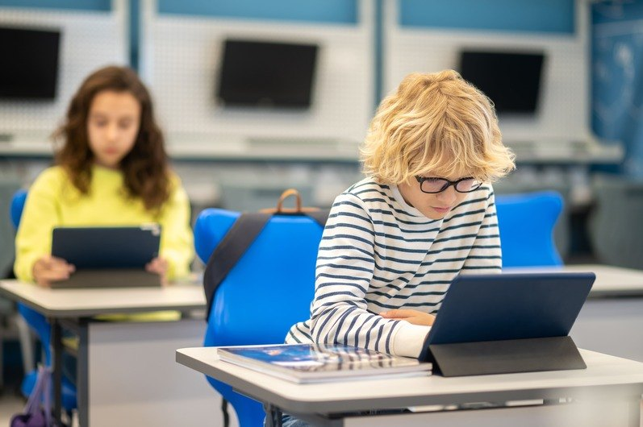

Descubra como a tecnologia está remodelando o ambiente educacional, oferecendo novas formas de aprendizado personalizado e colaborativo, enquanto enfrenta desafios de acesso e equidade.
A tecnologia está rapidamente transformando o cenário educacional, moldando não apenas o que e como os alunos aprendem, mas também o ambiente em que aprendem. Ferramentas digitais,
como tablets, computadores e softwares educacionais, estão se tornando cada vez mais integrados às salas de aula, oferecendo novas oportunidades de aprendizado
colaborativo e personalizado. A realidade virtual e aumentada promete trazer experiências imersivas para os alunos, permitindo que explorem mundos distantes ou simulem experimentos científicos complexos sem sair da sala de aula.

Além disso, a inteligência artificial está sendo utilizada para adaptar os currículos às necessidades individuais dos alunos, fornecendo materiais e exercícios personalizados com base no desempenho e estilo de aprendizado de cada um.
No entanto, essas mudanças não ocorrem sem desafios. Acesso desigual à tecnologia pode ampliar as disparidades educacionais, deixando alguns alunos para trás. Além disso,
a dependência excessiva da tecnologia pode diminuir a capacidade dos alunos de se concentrarem e se engajarem em tarefas mais tradicionais. Portanto, é essencial que os
educadores encontrem um equilíbrio entre o uso de tecnologia e métodos de ensino mais convencionais, garantindo que todos os alunos tenham acesso igualitário a oportunidades
de aprendizado de qualidade.
Email: guilhermedcamposayres@gmail.com
Telefone: (11) 97347-4002